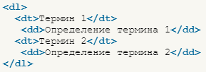

1. Для начала рассмотрим группу тегов dl, dt, dd, которые используются для списков описаний:
Синтаксис:

Список выше с определениями тегов составлен с использованием именно этих тегов, чтобы показать, как они работают.
2. Тег pre - сокращение от «preformatted text», который обозначает «предварительно отформатированный текст». Такой текст отображается обычно моноширинным шрифтом и со всеми пробелами между словами. По умолчанию, любое количество пробелов идущих в коде подряд, на веб-странице показывается как один. Тег <pre> позволяет обойти эту особенность и отображать текст как требуется разработчику.
Пример: этот текст отображается со всеми пробелами между словами
3. Тег сode предназначен для отображения одной или нескольких строк текста, который представляет собой программный код. Сюда относятся имена переменных, ключевые слова, тексты функции и т.д. Браузеры обычно отображают содержимое контейнера <code> как моноширинный текст уменьшенного размера.
В отличие от тега <pre> дополнительные пробелы внутри контейнера <code> не учитываются, так же, как и переносы текста. Поэтому используйте тег <br> или <p> для создания переносов.
Пример:
function checkParent (src, dest) {
while (src != null) {
if (src.tagName == dest) return src
src = src.parentElement
}
return null
}
4. Тег tt (от англ. "Teletype Text" ‒ «текст телетайп») отображает вложенный в него текст 'моноширинным шрифтом' (эффект пишущей машинки или телетайпа; семейство шрифтов «monospace»). Этот тег относится к группе тегов физического форматирования.
Тег <tt> не поддерживается в HTML5.
5. Тег kbd ( Keyboard Input Element) определяет вводимые пользователем нажатия клавиш или текст, набираемый на клавиатуре (по умолчанию представлен моноширинным шрифтом).